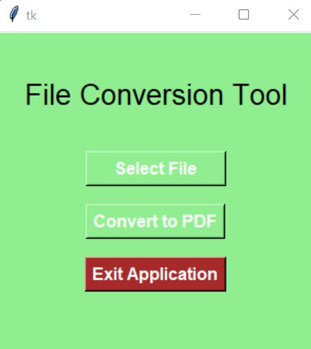

Photo-to-PDF Converter
The applet that appears upon launching the Python application.
This application was created to solve a specific problem: I had pictures that I wanted to store digitally, and all within one file. Thus, this Photos-to-PDF application was born! This implementation takes advantage of a couple of Python's libraries:
- Pillow: used for converting the image file (.png, .jpg, etc.) into a PDF file.
- Tkinter: used to create the UI and applet to perform conversions.